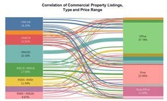

A territorial intelligence system is a sophisticated framework designed to monitor, analyze, and manage data related to geographic and spatial events. Utilizing data science and generative AI, this system provides real-time monitoring, predictive analytics, and strategic recommendations to enhance decision-making processes. It is particularly valuable for governments, military organizations, businesses, and environmental agencies that require comprehensive insights into territorial dynamics.
- Event Monitoring and Detection: Uses AI to continuously scan data sources for significant events, triggering real-time alerts.
- Real-Time Alerts and Notifications: Sends immediate alerts about detected events via email, SMS, or in-app messages.
- Predictive Analytics: Analyzes data to forecast future events and trends using machine learning models.
- Geospatial Data Visualization: Displays data on interactive maps and dashboards with tools like heat maps and trend lines.
- Risk Assessment and Management: Evaluates event impact and generates risk scores to prioritize response actions.
- Strategic Recommendations: Provides actionable insights and recommendations based on data analysis.
- Data Integration and Management: Integrates data from multiple sources, ensuring comprehensive and up-to-date information.
- Customizable Reporting: Generates tailored reports summarizing key findings and insights.
- User Management and Security: Manages user access, data security, and compliance with regulations.
Benefits
- Situational Awareness: Real-time monitoring and alerts ensure information about critical events.
- Proactive Risk Management: Predictive analytics and risk assessment tools help in anticipating and mitigating potential threats.
- Informed Decision-Making: Strategic recommendations and scenario analysis support better planning and response strategies.
- Efficient Resource Allocation: Optimize resources by identifying high-priority areas and actions.
- Improved Coordination: Facilitates better communication and coordination among different agencies and departments.

